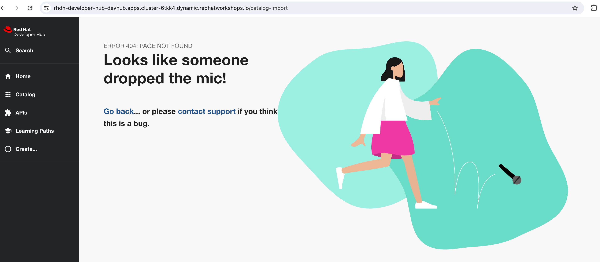
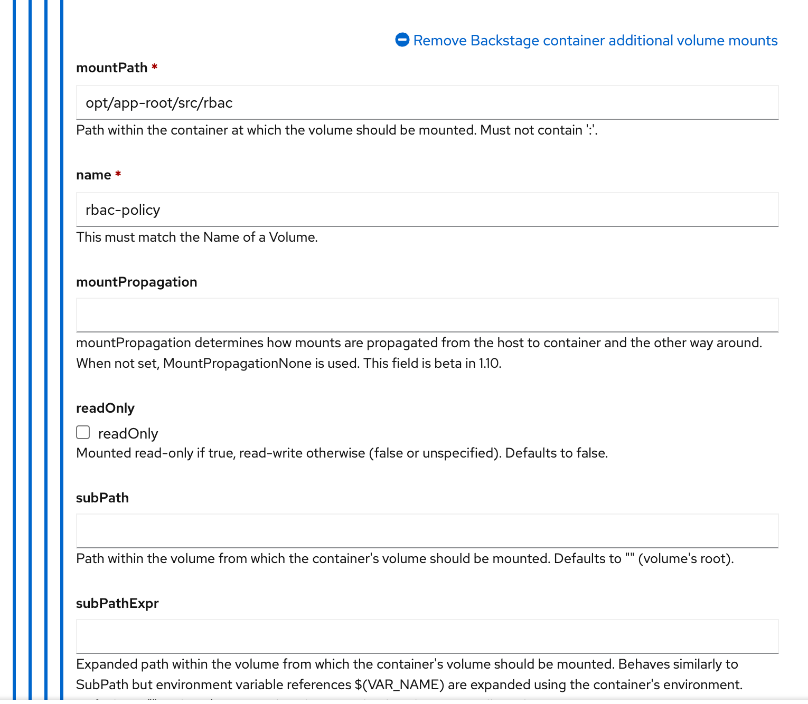
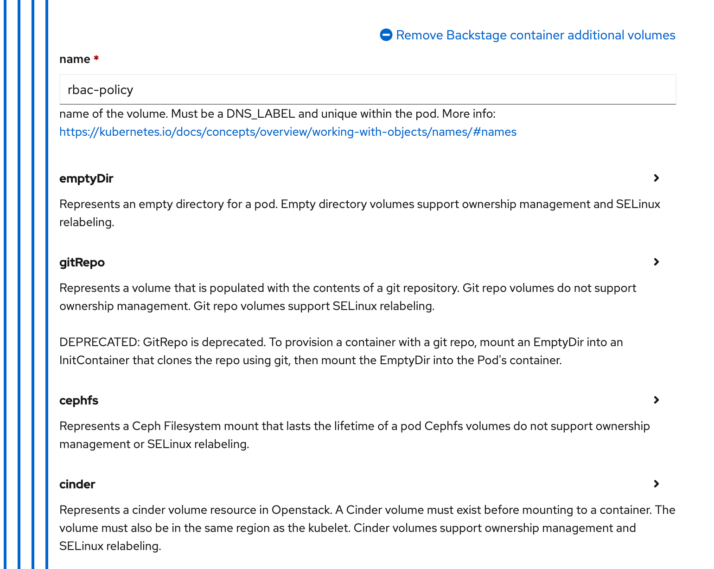
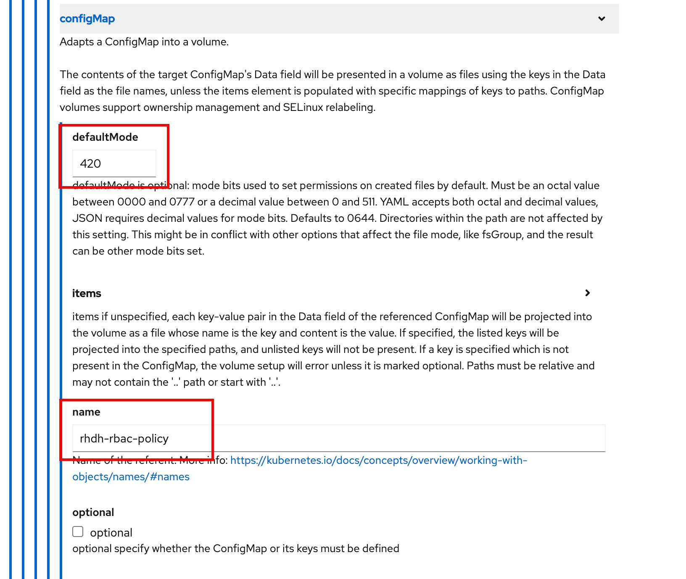

Role Based Access Control (RBAC)
In the previous section, you learnt how to authenticate users (that is, who they are). In this section you will learn how to authorize users to perform actions in RHDH (that is, what they can do in RHDH).
Role-Based Access Control (RBAC) is a security concept that controls access to resources in a system, and specifies a mapping between users of the system, and the actions they can perform on resources in the system. You define roles with specific permissions , and then assign the roles to users.
RBAC on RHDH is built on top of the Permissions framework in Backstage, which defines RBAC policies in code. Rather than define policies in code, the RHDH RBAC feature allows you to define policies in a declarative fashion using a simple CSV based format.
To apply RBAC in RHDH, you need to do two things:
-
Configure an authenticated user as a Policy Administrator
-
Configure policies in a CSV file and import it into RHDH
Declarative Role Based Access Control
RBAC in RHDH is configured using a CSV file that follows the casbin (https://casbin.org) format, a popular declarative domain specific language (DSL) for access control.
A RBAC policy CSV consists of a number of lines of declarations. A policy declaration consists of lines in the following format:
type, role_name, resource, action, permissionwhere,
-
type = should be a single letter -
pfor policy type, orgfor role assignments to users -
role_name = A custom role name defined by you, for example
admins,users,viewers -
resource = features in RHDH, for example
catalog-entity,policy-entity,scaffolder-template, and more -
action =
create,update, delete, orread -
permission =
allowordeny
Consult the references section at the bottom of this page for the full list of resource types in RHDH.
Consider the following policy snippet:
p, role:default/myrole, catalog-entity, read, allow
p, role:default/myrole, catalog.entity.delete, delete, deny
g, user:default/myuser, role:default/myroleIt defines a custom role named myrole that permits read only access to the RHDH catalog, but denies deletes. The last line in the policy CSV file assigns the myuser user the myrole role. The myuser user should be a valid identity that is authenticated by one of the identity providers supported by RHDH.
Lab: Configure Policy Administrators
The main reason to declare policy administrators is to allow a certain limited number of authenticated users to invoke the RBAC REST API. The actual policies are defined in a separate CSV file and referenced in the app-config-rhdh ConfigMap. This can be done by OpenShift platform or cluster administrators who have access to the namespace where RHDH is running.
|
-
To declare users as policy administrators, add the following
permissionattribute to theapp-config-rhdhConfigMap (At the same indentation level as the app and below the catalog attribute). Ensure that you added a valid authenticated user for theadmin.usersattribute:catalog: providers: githubOrg: default: id: development orgUrl: ${GITHUB_ORG_URL} permission: enabled: true rbac: admin: users: - name: user:/default/rsriniva -
Re-deploy the
rhdhhelm chart for the changes to take effect. -
Sign out from the existing RHDH session and login again using the GitHub ID of the declared policy administrator.
-
Navigate to the
Catalogpage in RHDH, and clickCREATE. Note that you are not allowed to create new components. -
Next, try navigating to the
APIpage and click onREGISTER EXISTING API. You will be shown anERROR 404page. With RBAC enabled, most features are disabled by default. You need to explicitly enable permissions to resources in RHDH.Figure 1. Not allowed to register APIs
Lab: Declarative Policy Definition in CSV Files
To selectively allow RHDH features, you need to declare roles with allowed policies, and then assign these roles to users or groups.
-
Edit the
app-config-rhdhConfigMap, and add a reference to the policy CSV file under therbacattribute that you enabled previously:catalog: providers: githubOrg: default: id: development orgUrl: ${GITHUB_ORG_URL} permission: enabled: true rbac: policies-csv-file: ./rbac/rbac-policy.csv admin: users: - name: user:default/rsriniva -
You will create a new ConfigMap to store the contents of the CSV policy file. Create a new ConfigMap named
rhdh-rbac-policywith the following content. These policies allow the user with theadminsrole to read, create and update components, but fetching catalog information from remote locations is denied:kind: ConfigMap apiVersion: v1 metadata: name: rhdh-rbac-policy namespace: devhub immutable: false data: rbac-policy.csv: |- p, role:default/admins, catalog-entity, read, allow p, role:default/admins, catalog.entity.create, create, allow p, role:default/admins, catalog.entity.refresh, update, allow p, role:default/admins, catalog.location.create, create, deny p, role:default/admins, catalog.location.read, read, deny g, user:default/rsriniva, role:default/admins -
To mount the contents of the RBAC policy CSV file into the RHDH container, edit the
rhdhhelm chart inForm Viewand follow the instructions as outlined in https://access.redhat.com/documentation/en-us/red_hat_developer_hub/1.0/html-single/administration_guide_for_red_hat_developer_hub/index#mounting-literal-policy-csv-literal-file-to-the-developer-hub-helm-chart. Ensure that the paths and name of ConfigMap match your set up.Exercise caution when adding new volume mounts and new volumes in the helm chart form view. Do NOT delete the existing volume mounts, otherwise various features and functionality in RHDH will be broken Figure 2. Container Volume Mounts ConfigurationFigure 3. Container Volumes ConfigurationFigure 4. RBAC ConfigMap Configuration -
Re-deploy the helm chart to re-read the new configuration.
-
Sign out and sign in again as the user (the user who was assigned the
adminsrole) you mentioned in the policy CSV file. Navigate to theCatalogpage, and clickCREATE. Note that you are now allowed to create new components. -
Click
APIand note that you are now allowed to register new APIs. -
Try and register a new API or component by entering
https://github.com/backstage/backstage/blob/master/catalog-info.yamlinto theSelect URLfield, and then clickANALYZE. Note that the deny policy forcatalog.locationin your RBAC prevents RHDH from fetching the metadata about the component. You will see an error:{"error":{"name":"NotAllowedError","message":""},"request":{"method":"POST","url":"/locations?dryRun=true"},"response":{"statusCode":403}} -
Change the
rhdh-rbac-policyConfigMap to allowcreateandreadactions for thecatalog.locationresource and re-deploy your helm chart. You should now be able to create new components and the metadata fetches from remote Git repositories should work as before. -
You can experiment with enabling and disabling various components of RHDH by following the permissions guide at https://github.com/janus-idp/backstage-plugins/blob/main/plugins/rbac-backend/docs/permissions.md. Some plugins and their features can be controlled using RBAC.
There is a bug in the RBAC system when database persistence is enabled for RBAC. Do not enable the database attribute in the rbac permission block in app-config-rhdh!
|
| You may encounter inconsistencies and bugs with RBAC, and policy examples are scarcely documented. There are plans to introduce a web based UI for policy management in future releases of RHDH. It is recommended to keep the RBAC system disabled when you trying out features and functionality of RHDH like Software Templates, plugins, Search, and more. Turn it back on only if you know what you are doing and you fully understand the impact of policy files. |
RBAC REST API
RHDH provides an RBAC REST API that you can use to manage the permissions and roles programmatically. This API can be used to automate the maintenance of RHDH permission policies and roles.
You can perform the following actions with the REST API:
-
Retrieve information about all permission policies or specific permission policies, or roles
-
Create, update, or delete a permission policy or a role
-
Retrieve permission policy information about static plugins
If RBAC is enabled, you may need to permit actions on the policy.entity resource for read, create and update to view and change policies using the REST API. Recall that the default policy is to deny, so you will see HTTP 401 or 403 errors if you make REST calls without policy changes.
|
Detailed coverage of the REST API is beyond the scope of this course. Consult the references section for more details.